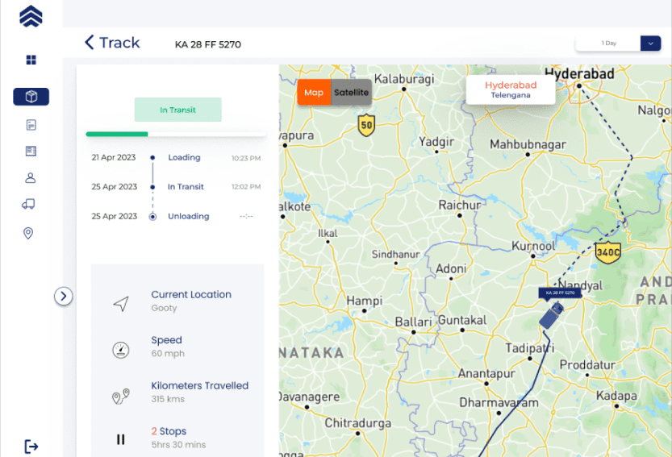

OPTIMIZING RESOURCES AND SAFETY: THE ROLE OF AUTOMATION IN IN-PLANT VEHICLE MOVEMENT
INTRODUCTION
Efficiency and safety are paramount concerns for any industrial facility. In-plant vehicle movement plays a crucial role in ensuring smooth operations, but it can also be a potential source of inefficiency and risk. The integration of automation technology has revolutionized various industries, and its application in optimizing resources and enhancing safety in in-plant vehicle movement is no exception. With liveasy, we help you in transforming the way vehicles are operated within industrial plants, leading to improved efficiency, reduced costs, and enhanced safety measures.
CONTENT
In today's manufacturing plants, there is a growing focus on optimizing resources and safety. One area where this is particularly important is in-plant vehicle movement. Traditionally, in-plant vehicles have been operated by human drivers. However, this can lead to a number of problems, including inefficiency, safety hazards, and increased labour costs. Liveasy can help to address all of these problems through optimization and efficiency.
1. ENHANCED EFFICIENCY THROUGH LIVEASY
Automation in in-plant vehicle
movement offers several
advantages that contribute
to enhanced efficiency. One
key aspect is the elimination
of human errors. Liveasy
ensure precise movement
and positioning of vehicles,
eliminating the risk of human error and minimizing the potential for accidents caused by misjudgements or miscalculations. Moreover, with liveasy, you can optimize vehicle routes and traffic flow within the plant. By analysing real-time data, such as production schedules, vehicle locations, and traffic patterns, these systems can identify the most efficient paths for vehicles.
Furthermore, automation enables better coordination and synchronization between vehicles and other plant operations. This synchronized approach streamlines operations, reduces idle times, and maximizes overall productivity.
Furthermore, automation enables better coordination and synchronization between vehicles and other plant operations. This synchronized approach streamlines operations, reduces idle times, and maximizes overall productivity.
2. ENHANCED SAFETY MEASURES

Safety is a paramount concern in
any industrial setting, and
automation plays a vital role in
mitigating risks associated with in-
plant vehicle movement. Liveasy
allows for the implementation of
access control mechanisms,
ensuring that only authorized personnel can operate vehicles within the plant. This reduces the risk of unauthorized vehicle use and enhances overall security. Also with liveasy, one can enforce speed limits and maintain safe distances between vehicles. They can monitor and adjust vehicle speeds based on the surrounding environment, preventing collisions and minimizing the potential for accidents caused by excessive speeds or reckless driving.
3. THE ROLE OF DATA ANALYTICS
Automation in in-plant vehicle movement generates a wealth
of data that can be leveraged for
continuous improvement. Data
analytics tools can analyse
historical and real-time data to
identify patterns, bottlenecks,
and potential areas for
optimization. Liveasy allows insights into vehicle movement patterns and operational inefficiencies, plant managers can make informed decisions to optimize resources and streamline operations further.
Data analytics can also support predictive maintenance. By analysing vehicle usage data and performance metrics, managers can anticipate maintenance needs, schedule preventive repairs, and minimize unexpected breakdowns or equipment failures. This proactive approach reduces downtime, optimizes vehicle availability, and ultimately enhances overall operational efficiency.
Data analytics can also support predictive maintenance. By analysing vehicle usage data and performance metrics, managers can anticipate maintenance needs, schedule preventive repairs, and minimize unexpected breakdowns or equipment failures. This proactive approach reduces downtime, optimizes vehicle availability, and ultimately enhances overall operational efficiency.

CONCLUSION
Automation has revolutionized in-plant vehicle movement, offering significant benefits in terms of resource optimization and safety. Through precise control, optimized routing, and synchronized operations, automation enhances efficiency, reduces costs, and minimizes the environmental impact of in-plant vehicle movement. Furthermore, the incorporation of advanced safety measures such as obstacle detection, access control, and speed regulation ensures a safer work environment for employees and visitors. By harnessing the power of data analytics, automation systems provide valuable insights that can drive continuous improvement and optimize resource allocation within industrial plants.
As technology continues to evolve, the integration of automation in in-plant vehicle movement will only become more sophisticated, leading to even greater efficiency gains and enhanced safety measures.
As technology continues to evolve, the integration of automation in in-plant vehicle movement will only become more sophisticated, leading to even greater efficiency gains and enhanced safety measures.